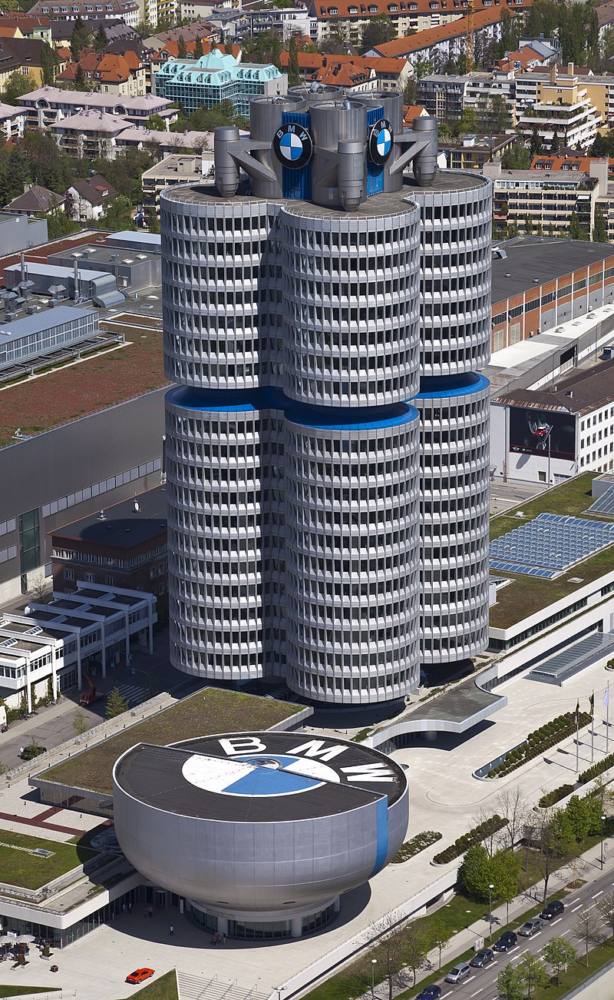
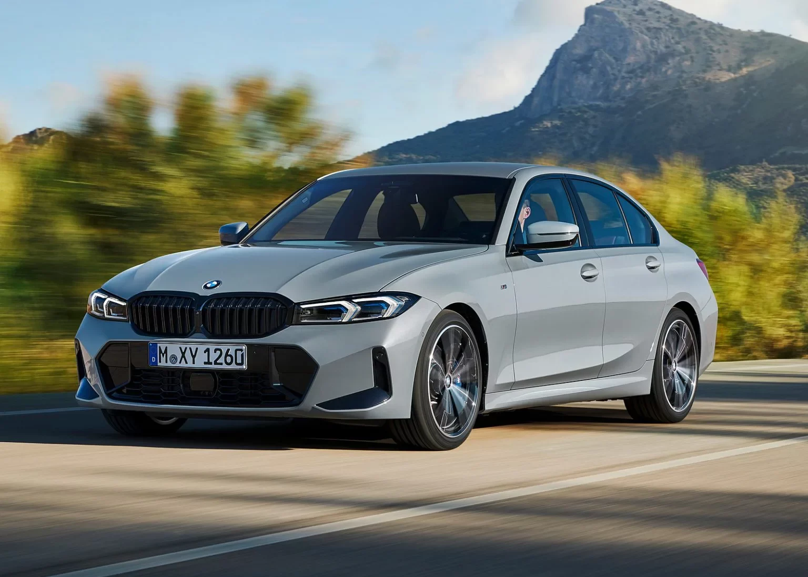
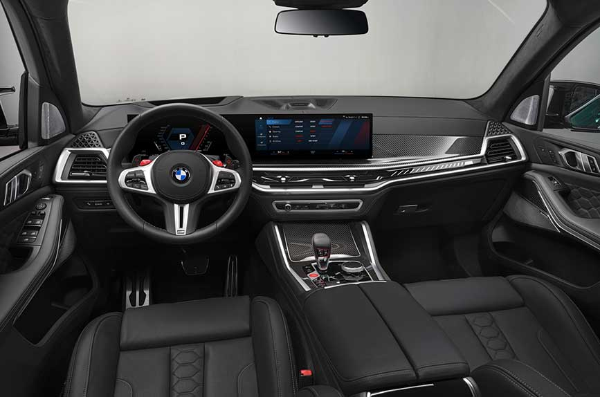
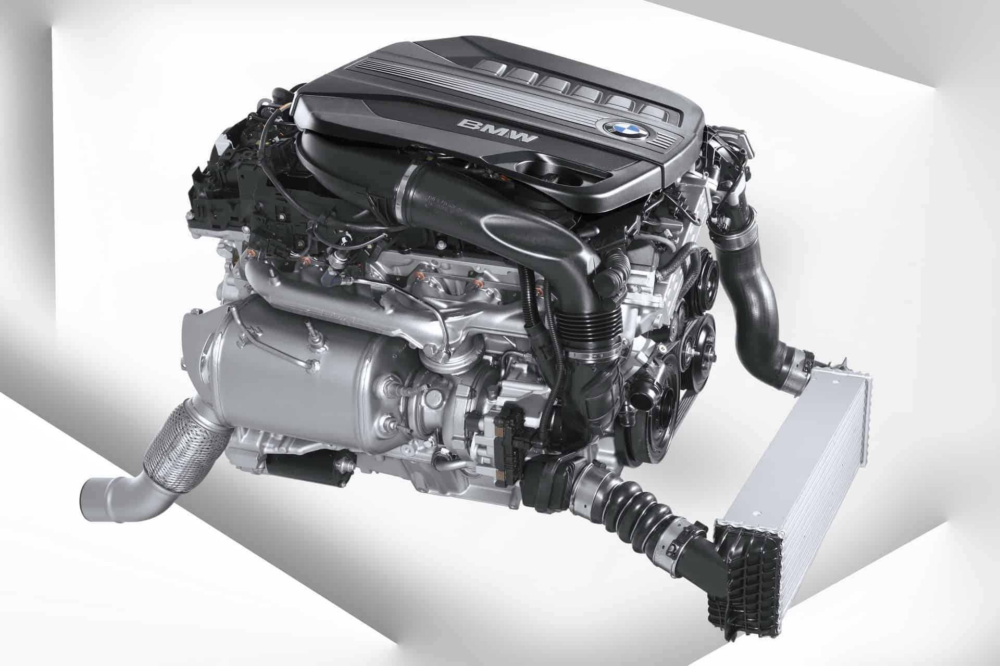

Sejarah

BMW memulai perjalanannya sebagai produsen mesin pesawat selama Perang Dunia I. Namun, setelah perang berakhir dan adanya pembatasan pada produksi pesawat, BMW beralih ke pembuatan sepeda motor pada tahun 1923 dan mobil pertama mereka diperkenalkan pada tahun 1928. Sejak saat itu, BMW terus berkembang menjadi salah satu pemain terbesar dalam industri otomotif global.
Nama BMW juga kerap dikaitkan dengan keunggulan teknologi dan desain. Logo khasnya, yang sering disalahartikan sebagai baling-baling pesawat, sebenarnya mewakili bendera Bavaria yang terbagi menjadi empat bagian dengan warna biru dan putih. Sepanjang dekade, BMW telah meluncurkan banyak model legendaris seperti BMW Seri 3, Seri 5, dan Seri 7, yang menjadi standar emas dalam kategori masing-masing.
Produk

BMW dikenal dengan berbagai macam kendaraan yang mencakup berbagai segmen, mulai dari sedan mewah, SUV, hingga mobil sport berperforma tinggi. Seri-seri populer seperti BMW Seri 3 dikenal karena keseimbangan antara kenyamanan dan kinerja, sedangkan Seri 7 menjadi salah satu mobil mewah terdepan yang menawarkan fitur-fitur canggih.
Selain itu, BMW juga memiliki lini kendaraan crossover dan SUV di bawah seri X, seperti BMW X5 dan BMW X3, yang sangat diminati karena keserbagunaan dan kemewahannya. Di samping mobil penumpang, BMW juga mengembangkan sepeda motor melalui divisi BMW Motorrad yang terkenal dengan model seperti BMW GS dan S 1000 RR.
Teknologi

Salah satu faktor kunci yang membedakan BMW dari kompetitornya adalah fokusnya yang kuat pada teknologi inovatif. Salah satu teknologi utama yang dikembangkan BMW adalah sistem iDrive, yang menggabungkan navigasi, multimedia, dan pengaturan kendaraan menjadi satu antarmuka yang intuitif. Teknologi ini membuat pengemudi dapat dengan mudah mengakses berbagai fitur canggih dalam kendaraannya.
Selain itu, BMW juga telah memperkenalkan teknologi penggerak empat roda yang disebut xDrive, yang memberikan traksi dan kontrol yang lebih baik pada berbagai kondisi jalan, baik itu di aspal, salju, maupun medan off-road. Teknologi ini memastikan bahwa pengemudi selalu merasakan stabilitas optimal, bahkan dalam kondisi cuaca yang ekstrem.
Teknologi Mesin

Dalam hal mesin, BMW selalu berkomitmen pada performa tinggi dan efisiensi. Mesin TwinPower Turbo BMW, yang tersedia dalam berbagai model, menawarkan keseimbangan sempurna antara tenaga, efisiensi bahan bakar, dan emisi rendah. Teknologi ini memungkinkan mesin kecil menghasilkan daya yang besar tanpa mengorbankan efisiensi bahan bakar.
Mobil Listrik BMW

Di tengah meningkatnya kesadaran lingkungan, BMW juga telah memperkenalkan lini kendaraan listrik dan hybrid plug-in di bawah merek BMW i. Salah satu model yang terkenal adalah BMW i3, sebuah kendaraan listrik penuh yang dirancang untuk lingkungan perkotaan. BMW i8, di sisi lain, adalah mobil sport hybrid plug-in dengan desain futuristik yang menawarkan performa tinggi namun tetap ramah lingkungan.
BMW Motorsport

BMW juga memiliki sejarah panjang dalam dunia motorsport, terutama dalam balapan mobil touring dan balap endurance. Mobil-mobil seperti BMW M3 dan BMW M4, yang berasal dari divisi M BMW, seringkali mendominasi berbagai ajang balap internasional. Keterlibatan dalam motorsport tidak hanya meningkatkan brand BMW, tetapi juga menjadi sarana untuk menguji dan mengembangkan teknologi yang nantinya diterapkan pada model produksi massal mereka.